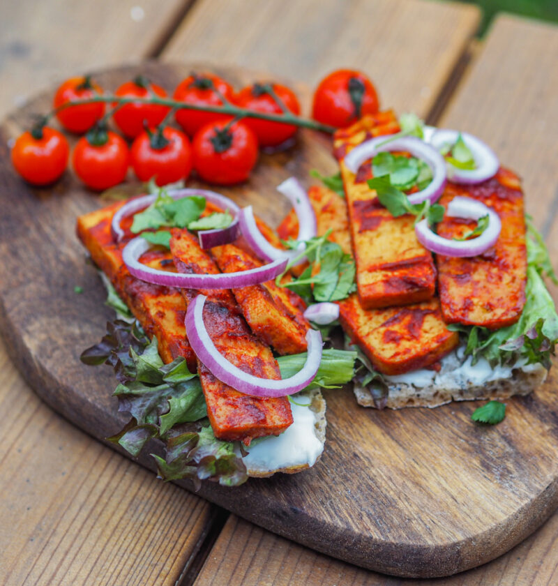

Tofu po Koreańsku

Tofu po Koreańsku – Korean Grilled Tofu (8-10 plastrów czyli na około 2-3 kanapki)
Składniki
- kostka twardego, zbitego tofu, około 200g (ja obecnie polecam Lunter)
- 120g pasty gochujang
- 120g ketchupu łagodnego
- 120g cukru brązowego (opcjonalnie białego)
- 75ml mirinu (opcjonalnie: wina do gotowania lub słodkiego białego wina)
- 75ml sosu sojowego
- 50ml octu ryżowego (opcjonalnie jabłkowego)
- startych (nie przeciśniętych) ząbków czosnku
Wykonanie
- Mieszamy wszystkie składniki (oprócz tofu) w rondlu, zagotowujemy i zmniejszamy ogień do średniego.
- Redukujemy przez 20-30 minut do dosyć gęstej, lepiącej konsystencji (po wystudzeniu będzie gęstnieć jeszcze bardziej), od czasu do czasu, mieszając.
- Tofu kroimy w dowolne plastry (ja preferuję w poprzek, ale takie duże płaty również zdadzą egzamin).
- Wrzucamy tofu do miski i polewamy marynatą tak by całe tofu było zalane.
- Marynujemy od kilku godzin do nawet kilku dni.
- Grillujemy na mocniej rozgrzanym ruszcie przez 3-4 minuty na stronę.
- Podajemy samo lub w kanapce z dowolnymi warzywami i majonezem.
Home